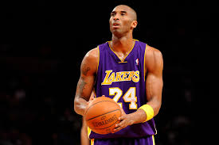
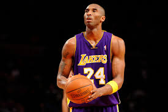

Kobe Bryant
1978-2020
Here's some images of Kobe Bryant
NBA awards and accomplishments
5-time NBA champion: 2000, 2001, 2002, 2009, 2010
2-time NBA Finals MVP: 2009, 2010
NBA Most Valuable Player: 2008
18-time NBA All-Star: 1998, 2000, 2001, 2002, 2003, 2004,
2005, 2006, 2007, 2008, 2009, 2010, 2011, 2012, 2013, 2014, 2015, 2016
4-time NBA All-Star Game MVP: 2002, 2007, 2009, 2011
NBA Slam Dunk Contest champion: 1997
34-times Player of the Month
Most All-Star Game MVP awards won, career: 4
Most offensive rebounds in an All-Star Game: 10
2nd most All-NBA Team honors won, career: 15
2nd most All-NBA First Team honors won, career: 11
Most All-NBA Team honors won by a guard, career: 15
Most All-NBA First Team honors won by a guard, career: 11
2nd most All-Defensive Team honors won, career: 12
Most All-Defensive First Team honors won, career: 9
Most free throws made, four-game playoff series: 51
2nd most points scored in a game in NBA history (81 points)
Most points scored in a game in modern era of basketball (81 points)
3rd most points scored as an opponent at Madison Square Garden (61 points)
Most points scored in one arena, career: 16,161
Most games played at one arena, career: 599
Most career points for a guard: 33,643
Highest Score against rest of teams in the league above 40
Youngest player to be named to the NBA All-Rookie Team: (1996-97)
2nd youngest player to be named to the NBA All-Defensive Team: (1999-2000 season)
Youngest player to be named to the NBA All-Defensive First Team
Youngest player to start a game: (18 years, 158 days)
Oldest player to record back-to-back games of 40+ points and 10+ assists (34 yrs, 197 days)
Oldest player to put up a 30-point triple-double (36 yrs, 99 days)
Oldest player to score 30 or more points in 10+ consecutive games (34 yrs)
Most total playoff CP with 3800
Highest CPPG with 20 cppg
If you have time, you should read more about this great player and an incredible human being on his Wikipedia entry.

 
